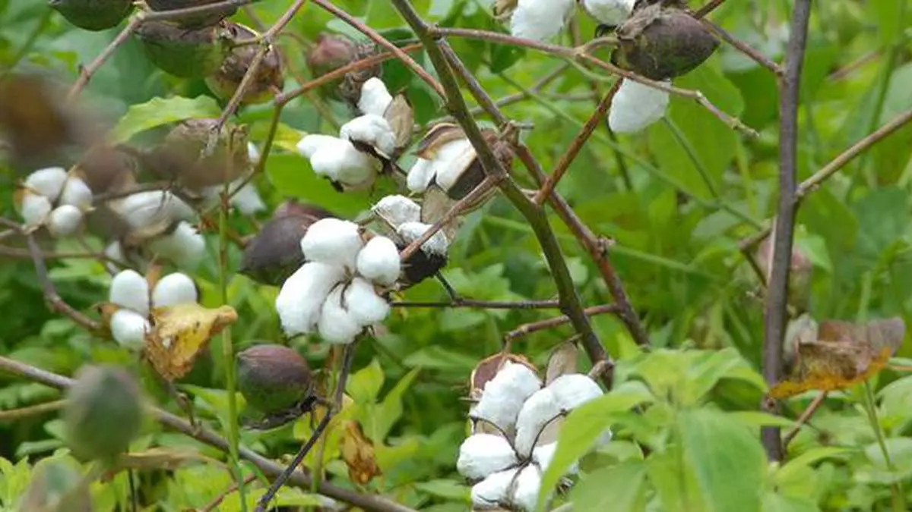

Crop Details

Cotton
Cotton is a soft, fluffy staple fiber that grows in a boll, or protective capsule, around the seeds of the cotton plants. It is used to make a variety of textile products, including clothing, beddings, and medical supplies.
- Scientific Name: Gossypium
- Plant Family: Malvaceae
- Price: $15.99 per kg
- Availability: In stock